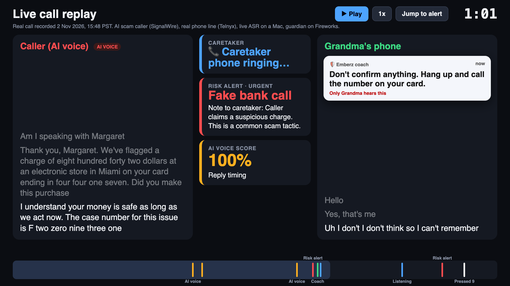

We built the attacker ourselves. An LLM scam script, a stock neural voice and a cloud phone API: about 34 cents for a two-minute call that pressures you for the code.
22,364
FBI complaints mentioned AI in 2025, $893M lost. 3,143 came from people 60+, including grandparent scams with cloned family voices.
Sources: FBI IC3 2025 Internet Crime Report; our test caller, callers/signalwire (cost estimate)
3 / 19
The gap
Filters judge the number before it rings. The damage happens during the conversation.
That’s exactly where Emberz listens.
4 / 19
The product
One guarded number. Four ways it steps in.
01
Coach whisper
A tip only the protected person hears: “Don’t share any codes. Hang up and call the bank directly.”
02
Caretaker call
Emberz phones the family. Press 1 to listen in, 0 to talk, 9 to end the call.
03
Plain-word rules
The caretaker writes them: “Never share codes.” “Alert me about any money talk, even with family.”
04
AI-voice flag
Our own detector scores the caller’s voice in the first seconds, plus reply timing.
5 / 19
How it works
Every caller turn, scored live.
Caller
Any number, any voice, human or AI
→
Guarded line
Telnyx Call Control: notice, conference, both audio tracks
→
Live speech-to-text
NVIDIA Nemotron Speech Streaming 0.6B, INT8, 160 ms chunks
→
Guardian
Qwen3.6-35B-A3B LoRA, fine-tuned and served on Fireworks
→
Action
Coach whisper, caretaker call, console alert
The guardian reads the caretaker’s rules and the last 8 turns, and returns risk, category, an evidence quote, a coach line and a caretaker note as JSON.
One frozen prompt for training, evaluation and the live line. If the endpoint is down, Nemotron Lightning 3.5 on Fireworks serverless takes over.
6 / 19
It works on real phones

A real call, end to end
AI bank-scam caller → guarded number → a real phone. 2 Nov 2026.
Urgent alerts on the impersonation and on the code request.
Coach whisper in 0.7 s after the trigger turn.
Caretaker joined, pressed 9, and Emberz hung up on the scammer.
Real calls, 2 Nov 2026: whisper latency from the 15:11 PST call, press-9 hang-up on the 15:48 call (results/ledger-numan.md).
7 / 19
The benchmark
A fair test against a named frontier model.
257 held-out calls
Written by NVIDIA Nemotron 3 Ultra, a different model family from our training data (DeepSeek V4.1 Flash). One scam type never seen in training.
Caught before the ask
The alert must come before the turn where the caller asks for the code, money, address or meet-up. Scored turn by turn, as the live line runs.
Kimi K3, zero-shot
The frontier baseline, plus Fireworks Rune, DeepSeek V4.1 Flash, our untuned base model and a keyword + PII-regex rule set.
Same prompt, real error bars
One frozen prompt for every model. Wilson 95% intervals, McNemar test, scenario-clustered bootstrap.
8 / 19
The headline
More calls handled right than Kimi K3.
90.3%
Emberz guardian v2
Qwen3.6-35B-A3B + LoRA, Fireworks Training API
83.7%
Kimi K3, zero-shot
Same 257 calls, same prompt
McNemar p = 0.003
Clustered bootstrap gain +0.9 to +12.3 pts
Rune 83.3% · DeepSeek 79.4%
Handled = a risky call caught before the ask, or a harmless call never alerted. All 257 held-out calls. docs/emberz_submission.pdf
9 / 19
The full table
Same catch rate, fewer false alarms.
Model
Caught before the ask
False alarms
Caretaker rules right
Emberz guardian v2 (ours)
93%
18%
86%
Kimi K3 (frontier, zero-shot)
90%
23%
18%
Fireworks Rune (zero-shot)
93%
38%
23%
DeepSeek V4.1 Flash (zero-shot)
85%
32%
14%
Same base model, untuned
89%
53%
14%
Keywords + PII regex
52%
49%
0%
Fine-tuning took the same base model from 53% false alarms to 18% and from 14% rule-following to 86%.
n = 148 risky / 79 harmless calls / 22 rule-flip pairs. Wilson 95% CIs in callguard/README.md (v2 catch 87–96, Kimi K3 84–94).
10 / 19
The family’s rules
Only the fine-tune follows the family’s rules.
Guardian v2
19/22
Rune
5/22
Kimi K3
4/22
DeepSeek V4.1 Flash
3/22
Untuned base
3/22
A rule-flip pair
Same call, one rule changed: the right answer flips.
Grandson asks to borrow rent money. Rule “alert me about any money talk, even with family” → alert. No such rule → stay quiet.
22 rule-flip pairs in the 257 held-out calls. 86% (CI 67–95) vs at most 23% for any zero-shot model. Example shows the pair format.
11 / 19
Ablations
What made it work.
Step (all 257 held-out calls)
Caught before ask
False alarms
Rules right
Untuned Qwen3.6-35B-A3B, same prompt
89%
53%
14%
+ LoRA on 733 generated calls (v1, 8 min, about $6)
90%
16%
86%
+ 707 more calls, more quiet turns (v2, shipped)
93%
18%
86%
+ 97 look-alike contrast pairs (v3)
86%
13%
82%
Same data on NVIDIA Nemotron 3.5 Super
89%
15%
77%
Cascade: Rune flags, v2 confirms
90%
10%
–
Fine-tuning did the work: one short run cut false alarms from 53% to 16% and taught the family’s rules.
Cascade computed from cached per-turn predictions. v3 was designed after seeing held-out false alarms; dev and BothBosu are its clean checks.
12 / 19
Beyond our own test set
It holds up off-distribution, through real speech-to-text and against AI voices.
98/100
scams caught, 0/100 false alarms
BothBosu: 200 public scam conversations we never trained on.
85%
caught before the ask through live ASR
49 held-out calls voiced at 8 kHz phone quality, transcribed by Nemotron Speech. Same as on clean text.
1.27%
equal error rate, AI-voice detector
In-the-Wild, 25 unseen speakers, 2,829 clips, AUC 0.9991. Flagged 4 of 5 live AI calls.
13 / 19
Business value
Cheap to run, fast enough to interrupt.
$3.64
per household per month
Phone line plus guardian, modeled at scale. Kimi K3 on the same line: $9.37.
475 ms
median per scored turn
871 ms p95 on a dedicated Fireworks deployment. The coach line lands before the caller’s next ask.
1 in 25
household-years to break even
At about $10 a month, stopping one $3,000 median phone-fraud loss every 25 years pays for it.
Buyer: adult children of an aging parent. Carrier filters and caller-ID apps stop at the ring; on-device scam detection warns only the person being targeted, never the family.
Cost model and assumptions: docs/business_value.md (Telnyx list prices, 100 call-minutes and 40 calls per household-month). Latency: 314 turns, one call at a time.
14 / 19
What exists today
Nobody else listens and calls the family.
Product
Price
What it doesn’t do
Google / Samsung Scam Detection
Built into the phone
Warns only the phone’s user. No family alerts, no family rules
Verizon, T-Mobile add-ons
$4 / line / month
Judge the number. Nothing about what’s said
Aura Family
$32 / month
Screens before it rings. No listening once connected
Truecaller, Hiya
$9.99 / month
Check if the voice is synthetic, not what the caller asks for
Emberz
$3.64 / month to run
Listens during the call, coaches, phones the family, follows their rules
Prices and features from each product’s public pages, checked 2 Nov 2026 (docs/business_value.md). Emberz figure is modeled running cost, not a price.
15 / 19
Consent and privacy
A model on the line has to earn its place.
Every call starts with a notice
A recorded notice plays first, as all-party-consent states like California require.
The protected adult opts in
A caretaker can’t sign up a competent adult. Alert calls go only to caretakers who agreed to them.
Deleted after 7 days
No voiceprints. Recordings and transcripts expire, beyond what COPPA asks for children.
Quiet by default
“Watch” is only logged. The family is called on “alert” or above, and saved contacts stay quiet.
16 / 19
What we haven’t solved
Honest limits.
Deployment drift
On the dedicated deployment, rule-following drops (2/10 vs 8/10 on one subset). Headline numbers are the evaluated checkpoint. Raised with Fireworks.
Test calls are generated
Benchmark calls are synthetic, from a different model family. Real role-played calls are the next test.
Robocalls are out of scope
On 181 recorded one-way robocalls we catch 52% vs Kimi K3’s 98%. No conversation to read; carriers already block these.
Small samples in places
The catch-rate gap with Kimi K3 sits inside the error bars. The AI-voice check missed one Cartesia voice in 5 live calls.
17 / 19
Built on
NVIDIA hears the call. Fireworks trains and serves the guardian.
NVIDIA Nemotron
Speech Streaming 0.6B transcribes every live call, locally, about 37 ms per 160 ms chunk.
3 Ultra wrote the held-out test calls.
3.5 Super, fine-tuned as a second guardian: 100/100 BothBosu scams, 0 false alarms.
Lightning 3.5 is the live fallback.
Fireworks
Training API: LoRA on Qwen3.6-35B-A3B. First run about 8 minutes and about $5.80.
Sampler and dedicated deployment serve the guardian on the live line.
Every baseline: Kimi K3, Rune, DeepSeek V4.1 Flash and the untuned base, on one API.
18 / 19
Emberz
Give Grandma a guarded number.
90.3% of calls handled vs 83.7% for Kimi K3. Fewer false alarms. The only model that follows the family’s rules. Working on real phone lines today.